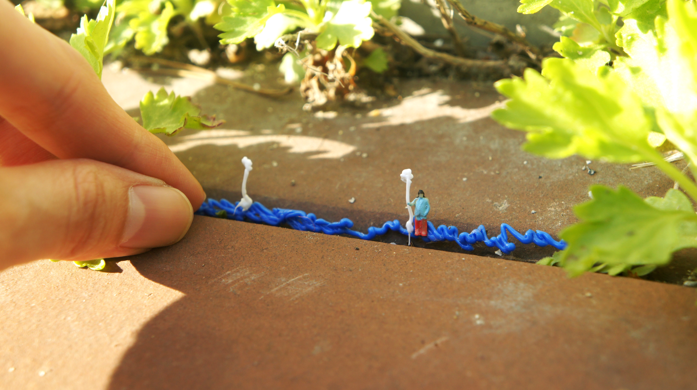
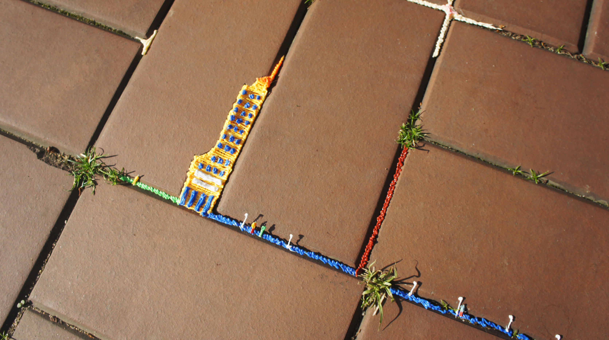
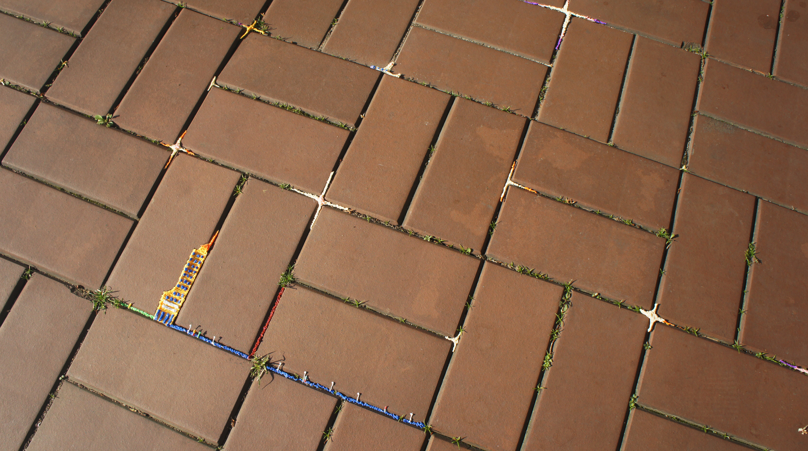
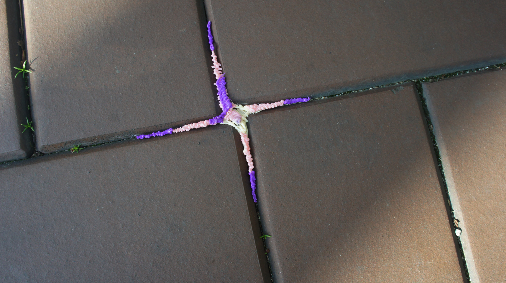
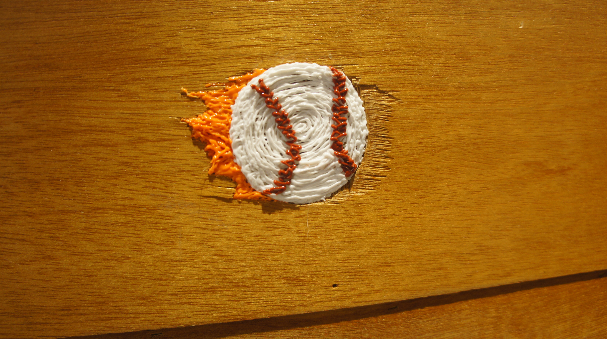
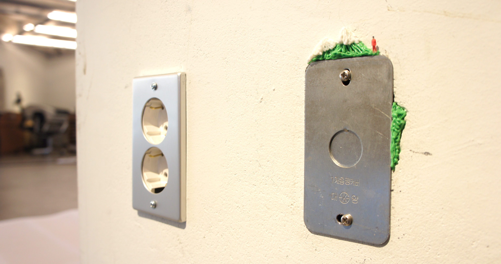

틈새 낙서

PLA, 3D 펜, 인체모형, 가변 크기, 2021.
일상에서 쉽게 발견할 수 있는 틈을 관찰해본다. 반듯한 직선으로 만들어진 틈부터 수많은 곡선들로 이루어진 틈도 있다. 그 틈은 주변에 존재하는 것들로 채워져 색으로, 형태로, 질감으로 새롭게 보여지기도 한다. 두성집 내부와 외부의 틈을 찾아 3D펜으로 틈의 모양에서 연상되는 이미지를 낙서하듯이 채워본다. 공간 속 배경 또는 그림자로 존재했던 틈이, 얼굴을 드러내어 조용히 인사를 건넨다.
    